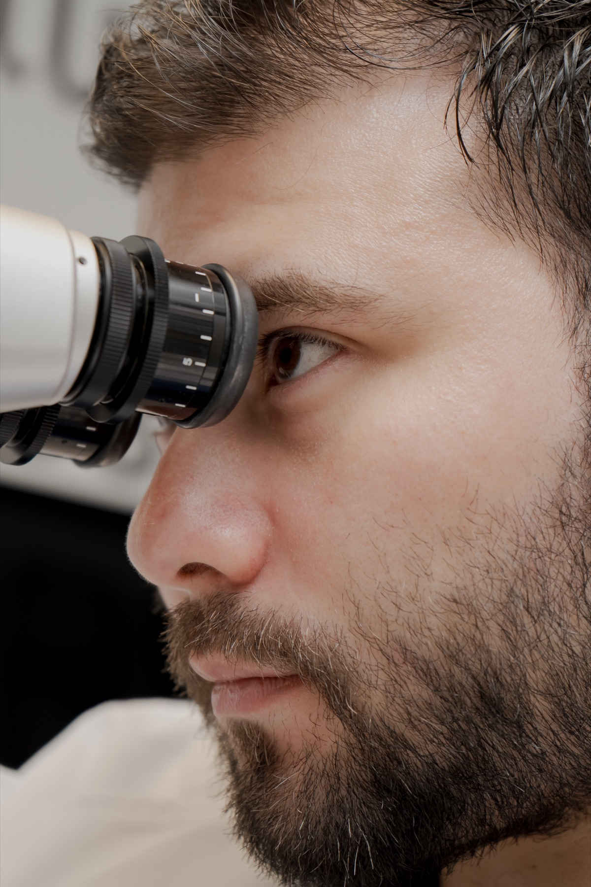

Consulta
Medimos tu presión ocular y revisamos tu nervio óptico.

Glaucoma
Al inicio no se siente. Con el tiempo puedes dejar de ver a los lados. Agenda tu revisión con un oftalmólogo certificado.

Testimonio · Epifanio Vázquez · paciente OftavisiónEl glaucoma daña el nervio óptico, casi siempre sin síntomas al inicio. Por eso le dicen "el ladrón de la visión". Con estudios del nervio óptico y del campo visual lo detectamos y lo tratamos con gotas, láser o cirugía.

Todo en tu misma sede, con un equipo que te explica cada paso.
Medimos tu presión ocular y revisamos tu nervio óptico.
OCT de nervio óptico y campimetría.
Gotas, láser o cirugía, según tu caso.
Revisiones para vigilar tu glaucoma.
La campimetría y el OCT de nervio óptico detectan el glaucoma antes de que lo notes.
Porque casi no da síntomas al inicio y avanza poco a poco.
OCT de nervio óptico y campimetría (campo visual).
Gotas, láser (iridotomía) o cirugía, según tu diagnóstico.
Sí. Agenda tu consulta y lleva tus estudios anteriores.
Atendemos glaucoma en nuestras clínicas. Elige tu sede y te contestamos por WhatsApp.